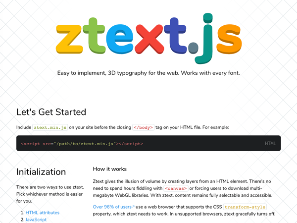
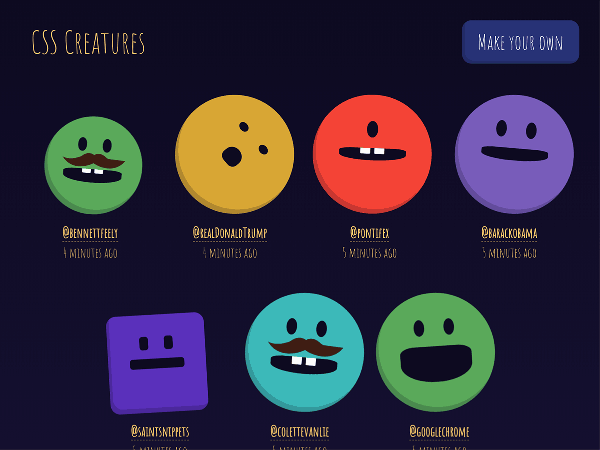
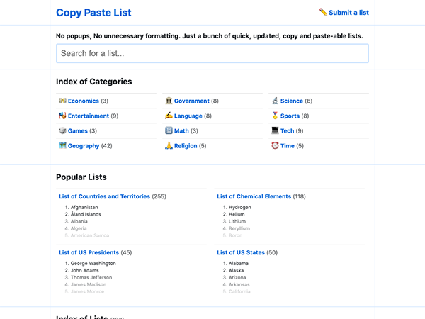
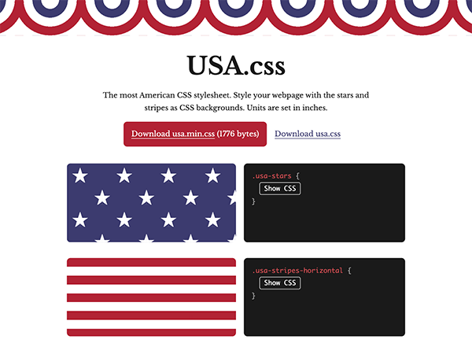

Recent Projects
- ztext.js, 3D typography for any website and any font
- CSS Creatures, make a creature from your tweet
- Copy Paste List, collection of lists in plain text
- USA.css, the most American CSS stylesheet
 CSS Pie Chart, generate pie charts with conic gradients
CSS Pie Chart, generate pie charts with conic gradients Clippy, a tool for making CSS clip paths
Clippy, a tool for making CSS clip paths Antiweather, see what the weather is like on the other side of the world
Antiweather, see what the weather is like on the other side of the world CSS Image Effects, using blend modes for complex image effects
CSS Image Effects, using blend modes for complex image effects CSS Gradients, using blend modes with background gradients
CSS Gradients, using blend modes with background gradients Flexplorer, learn how flexbox works with lists
Flexplorer, learn how flexbox works with lists CSS Scales, accessible CSS gradients
CSS Scales, accessible CSS gradients